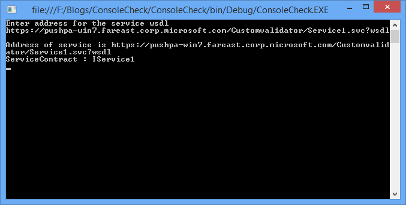

How to get WCF service contract programmatically from WSDL of the service
The project illustrates how to get WCF service contract programmatically from WSDL of the service
Introduction
The project illustrates how to get a WCF service contract (Interface) programmatically by reading the wsdl of the service.
Lots of developers ask about this in the MSDN forums, so we created the code sample to address the frequently asked programming scenario.
Running the Sample
Run the code, it will ask you to enter the adddress of the wsdl for the service. Once you enter it, It will print the service contract name.

Using the code
Step1. Create a Console Application in the Visual Studio.
Step2. Ensure we are using System.Web.Services.Description namespace
Step3. Here in this project I have made use of WebRequest and HttpWebResponse object to create the request to service wsdl.
//we read wsdl via a xml reader or stream reader and identify node port type System.Web.Services.Description.ServiceDescription wsdl = new System.Web.Services.Description.ServiceDescription(); wsdl = ServiceDescription.Read(reader); foreach (PortType pt in wsdl.PortTypes) { Console.WriteLine("ServiceContract : {0}", pt.Name); Console.ReadLine(); }
//we read wsdl via a xml reader or stream reader and identify node port type System.Web.Services.Description.ServiceDescription wsdl = new System.Web.Services.Description.ServiceDescription(); wsdl = ServiceDescription.Read(reader); foreach (PortType pt in wsdl.PortTypes) { Console.WriteLine("ServiceContract : {0}", pt.Name); Console.ReadLine(); }
More Information
System.Web.Services.Description
http://msdn.microsoft.com/en-us/library/system.web.services.description(v=vs.110).aspx
WebRequest Class
http://msdn.microsoft.com/en-us/library/system.net.webrequest(v=vs.110).aspx
HttpWebResponse Class
http://msdn.microsoft.com/en-us/library/system.net.httpwebresponse(v=vs.110).aspx
Microsoft All-In-One Code Framework is a free, centralized code sample library driven by developers' real-world pains and needs. The goal is to provide customer-driven code samples for all Microsoft development technologies, and reduce developers' efforts in solving typical programming tasks. Our team listens to developers’ pains in the MSDN forums, social media and various DEV communities. We write code samples based on developers’ frequently asked programming tasks, and allow developers to download them with a short sample publishing cycle. Additionally, we offer a free code sample request service. It is a proactive way for our developer community to obtain code samples directly from Microsoft.